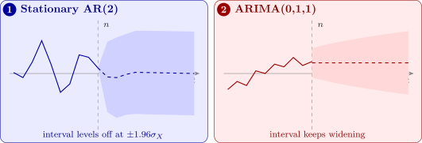

14.4 Box–Jenkins forecasts
When an ARIMA model has been fitted and checked, it provides forecasts that are optimal in a precise sense, together with measures of their uncertainty.
Theorem 14.4.1 (Minimum mean squared error forecast). Among all forecasts of \(X_{n+k}\) that are functions of \(X_n, X_{n-1}, \dots \), the one with the smallest mean squared error is the conditional expectation \[ \hat x(n, k) = E(X_{n+k} \mid X_n, X_{n-1}, \dots ) . \]
Proof. Write \(\mathcal {F}\) for the information \(X_n, X_{n-1}, \dots \), \(m = E(X_{n+k} \mid \mathcal {F})\), and let \(g\) be any forecast computed from \(\mathcal {F}\). Then \begin {align*} E(X_{n+k} - g)^2 &= E(X_{n+k} - m)^2 + 2E\bigl [(X_{n+k} - m)(m - g)\bigr ] \\ &\qquad + E(m - g)^2 . \end {align*}
Given \(\mathcal {F}\), the factor \(m - g\) is known and \(X_{n+k} - m\) has conditional mean \(0\), so the middle term is \(0\). Hence \(E(X_{n+k} - g)^2 \ge E(X_{n+k} - m)^2\), with equality only when \(g = m\). □
For an ARIMA model, the conditional expectation is computed from the model equation, written out for time \(n + k\), by replacing
- future values of \(Z\) by zero (their conditional mean);
- future values of \(X\) by their conditional expectations, which are forecasts already computed;
- past values of \(X\) and \(Z\) by their observed values (the past \(Z\)’s being the residuals of the fitted model).
For an AR(1) with mean \(0\), \(X_{n+1} = \alpha X_n + Z_{n+1}\) gives \(\hat x(n, 1) = \alpha x_n\), then \(\hat x(n, 2) = \alpha \hat x(n, 1) = \alpha ^2x_n\), and in general \(\hat x(n, k) = \alpha ^kx_n\): the forecasts decay geometrically towards the mean.
Theorem 14.4.2 (Forecast errors). Write the stationary or invertible-differenced model in its \(\psi \)-weight form \(X_t = \sum _{j\ge 0}\psi _jZ_{t-j}\) (for an ARIMA model, the weights of \(\theta (B)/[\phi (B)(1 - B)^d]\)). Then the \(k\)-step forecast error is \[ e_n(k) = X_{n+k} - \hat x(n, k) = Z_{n+k} + \psi _1Z_{n+k-1} + \dots + \psi _{k-1}Z_{n+1} , \] with mean \(0\) and variance \[ \Var \bigl (e_n(k)\bigr ) = \sigma _Z^2\bigl (1 + \psi _1^2 + \dots + \psi _{k-1}^2\bigr ) . \] Moreover, the forecasts are updated, when \(x_{n+1}\) is observed, by \[ \hat x(n + 1, k) = \hat x(n, k + 1) + \psi _k\bigl (x_{n+1} - \hat x(n, 1)\bigr ) . \]
Proof. \(X_{n+k} = \sum _{j\ge 0}\psi _jZ_{n+k-j}\). The shocks \(Z_{n+k-j}\) with \(j \ge k\) are at or before time \(n\), so known; those with \(j < k\) are future, with conditional mean \(0\) and independent of the past. So \(\hat x(n, k) = \sum _{j\ge k}\psi _jZ_{n+k-j}\) and the error is \(\sum _{j=0}^{k-1}\psi _jZ_{n+k-j}\), a sum of independent terms with variance \(\sigma _Z^2\sum _{j<k}\psi _j^2\). For the update, \(\hat x(n + 1, k) = \sum _{j\ge k}\psi _jZ_{n+1+k-j}\) and \(\hat x(n, k + 1) = \sum _{j\ge k+1}\psi _jZ_{n+1+k-j}\) differ by the single term \(\psi _kZ_{n+1}\), and \(Z_{n+1} = x_{n+1} - \hat x(n, 1)\) is the one-step error. □
So, with normal shocks, an approximate \(95\%\) prediction interval for \(X_{n+k}\) is \[ \hat x(n, k) \pm 1.96\,\hat \sigma _Z\sqrt {1 + \psi _1^2 + \dots + \psi _{k-1}^2} . \] For a stationary model the \(\psi _j\) die away, so the interval widens at first and then levels off at \(\pm 1.96\sigma _X\): far ahead, the best forecast is the mean, and the uncertainty is the variance of the process itself. For a non-stationary model the \(\psi _j\) do not die away (for ARIMA(0,1,1), \(\psi _j = 1 + \beta \) for every \(j \ge 1\)), and the interval keeps widening without limit (Figure 12). The intervals ignore the uncertainty in the estimated parameters, so they are somewhat too narrow, especially for short series.

Example 14.4.3. For the AR(2) model fitted in Example 13.4.2, \(X_t = 0.554X_{t-1} - 0.402X_{t-2} + Z_t\) with \(\hat \sigma _Z^2 = 0.930\) (the series measured from its mean), the last two values were \(x_{n-1} = 0.87\) and \(x_n = 0.30\). Forecast three steps ahead with \(95\%\) prediction intervals.
Solution. Forecasts. Replace future \(Z\)’s by \(0\) and future \(X\)’s by their forecasts: \begin {align*} \hat x(n, 1) &= 0.554(0.30) - 0.402(0.87) = 0.166 - 0.350 = -0.184 , \\ \hat x(n, 2) &= 0.554(-0.184) - 0.402(0.30) = -0.102 - 0.121 = -0.222 , \\ \hat x(n, 3) &= 0.554(-0.222) - 0.402(-0.184) = -0.123 + 0.074 = -0.049 . \end {align*}
Intervals. The \(\psi \) weights follow the AR recursion (Proposition 9.2.1): \(\psi _0 = 1\), \(\psi _1 = 0.554\), \(\psi _2 = 0.554^2 - 0.402 = -0.095\). So the error variances are \begin {gather*} 0.930 , \qquad 0.930(1 + 0.307) = 1.215 , \\ 0.930(1 + 0.307 + 0.009) = 1.224 , \end {gather*} and the \(95\%\) half-widths \(1.96\sqrt {\cdot }\) are \(1.89\), \(2.16\) and \(2.17\). The intervals are \(-0.18 \pm 1.89\), \(-0.22 \pm 2.16\) and \(-0.05 \pm 2.17\). Already at three steps the half-width is close to its limit \(1.96\sigma _X = 1.96\sqrt {1.314} = 2.25\), with \(\sigma _X^2\) from Theorem 8.2.1: an AR(2) with these parameters has little memory, so beyond a step or two the forecast is essentially the mean. Figure 12, panel 1, shows the forecasts.
Questions on this section
Stuck on something here? Ask below and it stays attached to this topic.